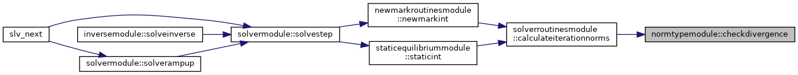
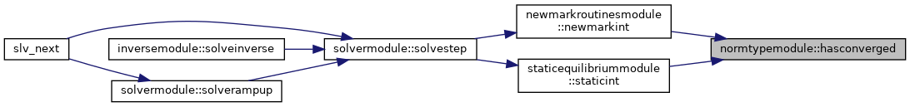
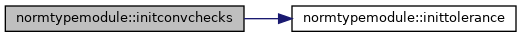
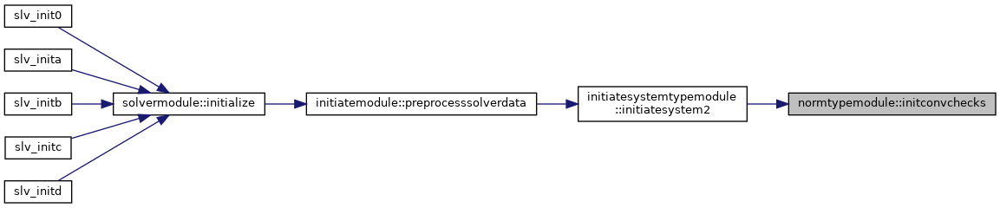
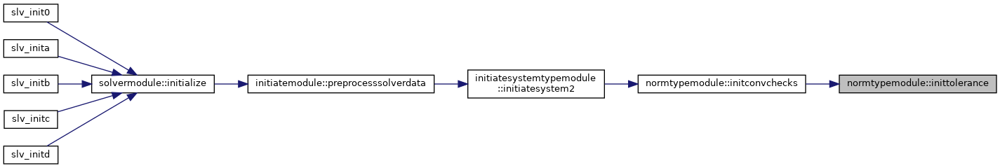

|
FEDEM Solver
R8.0
Source code of the dynamics solver
|
Module with data types representing convergence norm objects. More...
Data Types | |
| type | testitemtype |
| Data type representing a convergence check definition. More... | |
| type | testsettype |
| Data type representing a set of convergence checks. More... | |
Functions/Subroutines | |
| subroutine | nullifyconvset (convSet) |
| Initializes a set of convergence checks object. More... | |
| subroutine | deallocateconvset (convSet) |
| Deallocates a set of convergence checks object. More... | |
| subroutine | initconvchecks (convSet, maxIt, monWorst, monIter, relTol, err) |
| Initialize the convergence checks from command-line options. More... | |
| subroutine, private | inittolerance (tolType, normName, testItem) |
| Initializes a convergence check with data from command-line. More... | |
| logical function | hasconverged (convSet, factor_opt) |
| Checks if the state of the convergence checks set is converged. More... | |
| subroutine | checkdivergence (testItem, value, mayDiverge) |
| Check if a given norm is showing sign of possible divergence. More... | |
Variables | |
| integer, parameter | nnormtypes_p = 4 |
| Total number of norm types. More... | |
| integer, parameter | ivecnorm_p = 1 |
| Index for L_2 displacement norm. More... | |
| integer, parameter | iinftra_p = 2 |
| Index for L_inf translation norm. More... | |
| integer, parameter | iinfrot_p = 3 |
| Index for L_inf rotation norm. More... | |
| integer, parameter | iinfgen_p = 4 |
| Index for L_inf generalized DOF norm. More... | |
Module with data types representing convergence norm objects.
The module also contains subroutines for accessing the norm data.
| subroutine normtypemodule::checkdivergence | ( | type(testitemtype), intent(inout) | testItem, |
| real(dp), intent(in) | value, | ||
| logical, intent(inout) | mayDiverge | ||
| ) |
Check if a given norm is showing sign of possible divergence.
| testItem | The convergence check object to check for dovergence | |
| [in] | value | Current norm value |
| mayDiverge | If .true., a possible divergence is detected |

| subroutine normtypemodule::deallocateconvset | ( | type(testsettype), intent(inout) | convSet | ) |
Deallocates a set of convergence checks object.
| convSet | The normtypemodule::testsettype object to deallocate |
| logical function normtypemodule::hasconverged | ( | type(testsettype), intent(in) | convSet, |
| real(dp), intent(in), optional | factor_opt | ||
| ) |
Checks if the state of the convergence checks set is converged.
| convSet | Set of convergence checks | |
| [in] | factor_opt | Optional tolerance scaling factor |

| subroutine normtypemodule::initconvchecks | ( | type(testsettype), intent(inout) | convSet, |
| integer, intent(in) | maxIt, | ||
| integer, intent(in) | monWorst, | ||
| integer, intent(in) | monIter, | ||
| real(dp), intent(in) | relTol, | ||
| integer, intent(out) | err | ||
| ) |
Initialize the convergence checks from command-line options.
| convSet | Set of convergence checks | |
| [in] | maxIt | Maximum number of iterations per time step |
| [in] | monWorst | Number of DOFs to monitor on poor convergence |
| [in] | monIter | Number of iterations to monitor before maxit |
| [in] | relTol | Velocity proportional tolerance on velocity corrections |
| [out] | err | Error flag |


|
private |
Initializes a convergence check with data from command-line.
| [in] | tolType | Command-line option to get convergence tolerance from |
| [in] | normName | Name of solution norm defining the convergence check |
| testItem | The convergence check object to initialize |

| subroutine normtypemodule::nullifyconvset | ( | type(testsettype), intent(out) | convSet | ) |
Initializes a set of convergence checks object.
| [out] | convSet | The normtypemodule::testsettype object to initialize |
| integer, parameter normtypemodule::iinfgen_p = 4 |
Index for L_inf generalized DOF norm.
| integer, parameter normtypemodule::iinfrot_p = 3 |
Index for L_inf rotation norm.
| integer, parameter normtypemodule::iinftra_p = 2 |
Index for L_inf translation norm.
| integer, parameter normtypemodule::ivecnorm_p = 1 |
Index for L_2 displacement norm.
| integer, parameter normtypemodule::nnormtypes_p = 4 |
Total number of norm types.